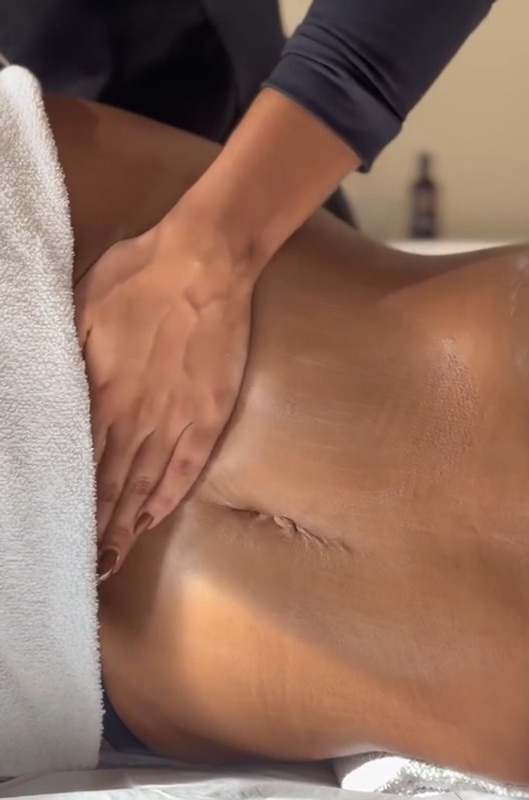

O protocolo desenvolvido dentro da Clínica Mah Guimarães para quem convive com inchaço e retenção de líquido — especialmente na região abdominal. Não é a drenagem que você já fez em outro lugar.

Retenção de líquido não é frescura nem "coisa da sua cabeça". É um desequilíbrio real do sistema linfático que faz o corpo segurar água nos tecidos — e o abdômen costuma ser a região onde isso aparece primeiro e incomoda mais.
Quem convive com isso conhece os sinais: a calça que serviu de manhã e aperta à tarde, a sensação de peso nas pernas, o inchaço que piora no calor, na TPM ou depois de um dia sentada. E a frustração de treinar, comer bem e mesmo assim não ver o abdômen responder.
E aí vem a parte que mais irrita: você faz uma drenagem em algum lugar, sai leve, e três dias depois está tudo de volta. Não é que a drenagem não funcione — é que sessão avulsa, sem protocolo e sem foco, trata o sintoma daquele dia e não a causa.
O MAF nasceu da prática. Diferente da drenagem comum, o protocolo usa técnicas manuais vigorosas, respiração e alongamento — trata o corpo como um todo, não só o inchaço do dia. Depois de anos atendendo mulheres que faziam drenagem e não sustentavam o resultado, ficou claro que o problema não era a técnica isolada — era a falta de direcionamento e de sequência. O método organiza as duas coisas: foco na região que mais incomoda e protocolo em série, com orientação entre as sessões.
Nem todo inchaço é retenção linfática. Antes de qualquer manobra, é feita uma avaliação para entender a origem do seu caso — hormonal, circulatório, alimentar, postural ou uma combinação. O protocolo só é montado depois disso.
A drenagem tradicional trabalha o corpo inteiro de forma genérica. Aqui o protocolo é direcionado para onde o inchaço mais se acumula e mais incomoda — o que muda a sequência das manobras e o tempo dedicado a cada região.
Resultado de drenagem se constrói em série, nunca em sessão única. O número de sessões e o intervalo entre elas são definidos na avaliação, conforme o grau de retenção e o seu objetivo.
O que você faz entre uma sessão e outra decide se o resultado dura. Você sai com orientações práticas de hidratação, alimentação e movimento — ajustadas à sua rotina real, não a uma rotina ideal que ninguém consegue seguir.
Além de drenar e modelar, o protocolo auxilia no tratamento de diástase. O que dá para fazer no seu caso é definido na avaliação.
Quem desincha de manhã e volta a inchar ao longo do dia, sem relação clara com o que comeu.
Sensação de peso, pernas cansadas no fim do dia, marca de meia na pele, anel apertando.
Quem passou por procedimento corporal e precisa de acompanhamento para o inchaço ceder no tempo certo.
Quando a retenção mascara o resultado do trabalho que você já está fazendo.
Para quem tem um ciclo previsível de retenção e quer reduzir o impacto desses dias.
Casamento, formatura, viagem — quando você quer chegar naquele dia se sentindo bem no próprio corpo.
Importante e honesto: drenagem não é emagrecimento. O Método MAF trata inchaço e retenção — o que muda medidas, silhueta e como a roupa cai. Se o seu objetivo for redução de gordura localizada, o caminho é outro (e a gente te diz isso na avaliação, em vez de te vender o protocolo errado).
Duas coisas: direcionamento e sequência. A drenagem comum trabalha o corpo inteiro de forma padronizada e costuma ser vendida como sessão avulsa. O MAF começa com avaliação da origem do inchaço, concentra o trabalho na região que mais incomoda, e é aplicado em série com orientação entre as sessões — que é o que faz o resultado se sustentar.
Sim. Além de drenar, tratar retenção de líquidos e modelar, o protocolo auxilia no tratamento de diástase. O que é possível fazer no seu caso, e em quantas sessões, é definido na avaliação — não existe conduta igual para todo mundo.
O número é definido na avaliação e varia conforme o grau de retenção e o seu objetivo. O que dá para adiantar é que resultado de drenagem se constrói em série — sessão única alivia o dia, não muda o quadro.
Não. A drenagem trabalha com pressão leve — o sistema linfático é superficial e responde a toque suave, não a força. A maior parte das pacientes relata a sessão como relaxante.
A sensação de leveza costuma aparecer já na primeira sessão. A mudança que se sustenta — medidas, silhueta, roupa caindo diferente — aparece ao longo da série.
Em muitos casos sim, e frequentemente é o ideal — drenagem costuma potencializar resultados de outros protocolos corporais. A combinação é definida na avaliação.
O valor depende do protocolo montado para o seu caso. Chame no WhatsApp que passamos os valores e a disponibilidade da semana.
A avaliação é onde a gente descobre a origem do seu inchaço — e te diz com honestidade se este é o protocolo certo para você.